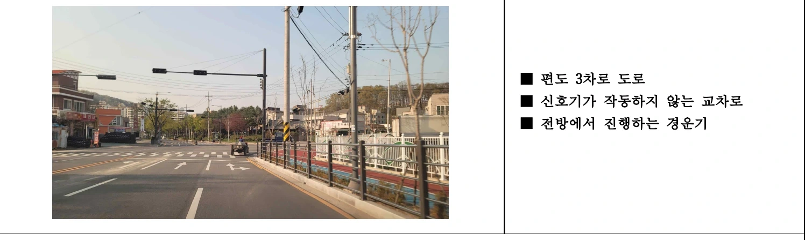

776. 在下列情况下，最安全的两种驾驶方法是？

- ①由于未开启信号灯，因此驶入交叉路口时应仔细观察交叉路口的情况。
- ②准备右转时，边鸣笛边从耕耘机左侧超车。
- ③耕耘机行驶速度慢，因此加速先右转。
- ④准备在第三车道直行时，行驶前准确确认耕耘机的行驶情况。
- ⑤耕耘机可能会直行，因此提前预想到这种情况，并紧急变道至第二车道直行。
查看答案
答案
① 由于未开启信号灯，因此驶入交叉路口时应仔细观察交叉路口的情况。
④ 准备在第三车道直行时，行驶前准确确认耕耘机的行驶情况。
依据
如果前面有慢速农业机械，如耕耘机，其速度比汽车慢，所以开车前必须仔细检查耕耘机的状况。驾驶或试图超车时提前预见并突然变更车道是危险的。
依据文字为学习用机器翻译。